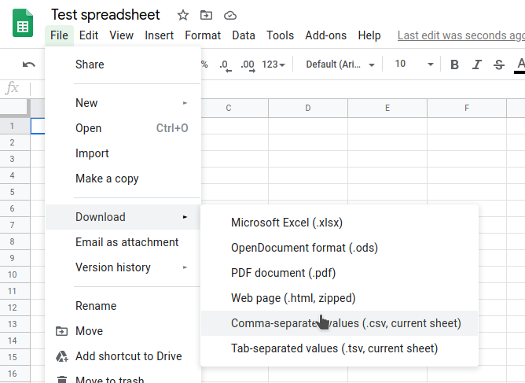
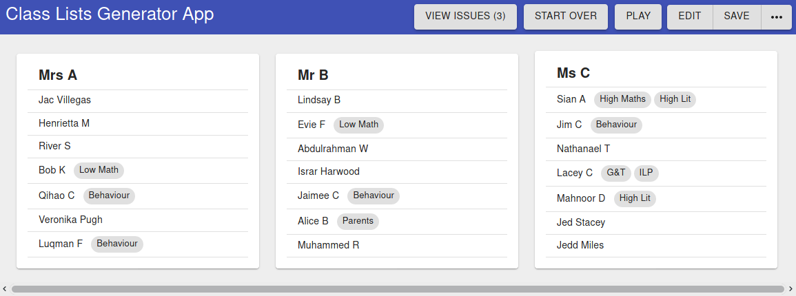

The class lists generator needs a spreadsheet in a certain format with student names, friends they would like to be with, and other information, in order to correctly allocate classes. Either Google Sheets or Microsoft Excel can be used to create the spreadsheet. For simplicity's sake this tutorial focuses on Google Sheets, however you can copy the template into Excel and export as CSV the same way.
Here is a Google Sheets template. Go to File > Make a Copy, and share it with anybody else who needs access. Follow the instructions inside the spreadsheet. If you make multiple sheets for each class, make sure to copy them all into the same big sheet at the end.
Before you can use the app, you need to save the spreadsheet in Sheets. However, it must be saved in the special CSV format, as this is easier for the app to understand. To export a CSV file, go to File > Download > Comma Separated Values (CSV). Save the file somewhere you will remember.

Once you have a CSV file, you can proceed to the next step.
First, you will need to open up the app. Open this link in a new tab (right click > open in new tab). If you get a 404 error, make sure there is a single slash (/) at the end of the URL.
When you open up the app, it will ask you to import a spreadsheet. Click 'Import', and then find the CSV file you just saved. If all goes well, it should import correctly without any error messages.
This section includes sources of potential problems with importing the spreadsheet exported in the previous step. Feel free to skip it if no issues were encountered.
After successfully importing the spreadsheet, you should be presented with several columns as depicted below:

Now we can progress to using the app to generate class lists according to the constraints in the spreadsheet.
Now, press "Play" to start running the class optimisation process. This will calculate thousands of possible class lists and quickly improve the list. If you click the "View Issues" button you'll notice the number of issues decreasing. It will automatically stop when it has stopped improving. You can pause and resume the process or restart ("Start Over") at any time.
For various reasons, the class lists generated may have certain problems. There are two ways of fixing problems in this app:
Click Edit and then the pencil next to the student you would like to move. Then, consider why the change needs to be made - does this student need to be separated from another student? If so, update the 'cannot be with' list. Can the student not be with a certain teacher? Change the 'possible teachers' list. If you change these parameters rather than force the student into another class yourself, the computer will understand why you want to make the change and will be able to fix it itself when you unpause the program.
If the reason for a change is too complex to express in the list of parameters offered, consider unticking all teachers except that of the class you would like them moved to, or pressing 'start over'.
Click Edit and then the pencil next to the student you would like to move. Then directly under the name click the teacher name select field and choose the desired teacher. Although faster, this approach is not recommended. It is only recommended for finalising the class list. This is because manually overriding the program means if you unpause it it will become confused and think your change was a mistake and most likely undo it. Instead, you should change an underlying parameter so the computer will automatically move the student for you. This is because if the information fed into the program was complete/correct, it would have already made the change you desire.
There are two ways of exporting the class list. One is to print the website. Many computers allow you to print to a PDF which is saved to your computer instead of printing an actual hardcopy. The other option is to export a CSV spreadsheet file which you can open with Google Sheets or Microsoft Excel.
Click the three dots in the top right when you are not in editing mode, and then click Export spreadsheet (CSV). This will download another CSV file for you with the generated class lists. When you have this file, you can import it into Excel or Google Sheets again. In Google Sheets, you do this by pressing File > Import > Upload, then finding your CSV file.